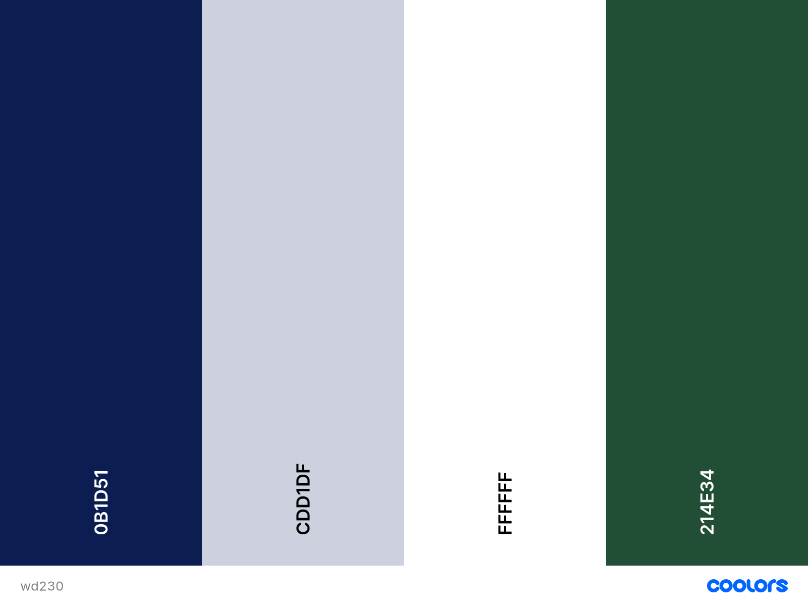

Color Schemes
Since the name of the site is "The Leaf on the Wind" I knew it definitely needed to have some green on the logo. White seemed like the best color to have with the green logo to make the weather icons stand out against the green. I also wanted to have blue, to be somewhat reminiscent of the sky. The blue is used in the navigation, and I will probably be using those colors in the main body of the site somewhere as well. There's a light periwinkle color as well that I've used for the background. I wanted to have some color besides white for the background, but it had to be very light to allow the other colors to stand out.
